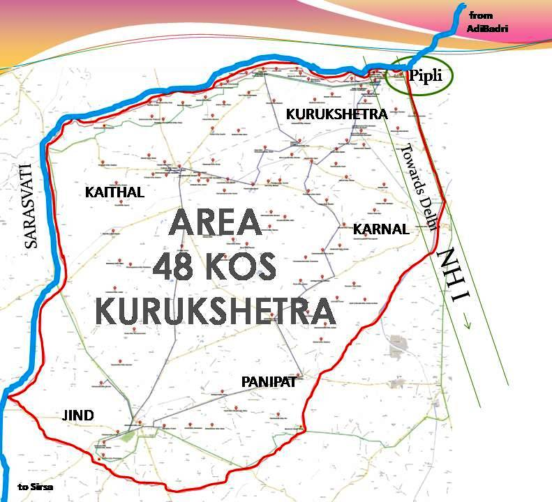

Kurukshetra is named after King Kuru who sacrificed his life to establish Dharam and bringing prosperity to the people of this 48 kos land. This 48 kos area (around 240 km of the perimeter) of Kurukshetra bhumi is between south side of Saraswati and north side of Drastadwati river. At four corners there are Four Yaksh and around 134 PreMahabharat and Mahabharat tirth are located in this area. Since ancient times pilgrims does Prikarma of all these tirth sthals.

Kurukshetra is the land between two ancient rivers viz. Saraswati and Drishadvati. Both these ancient rivers have dried up due to major tectonic
activities and climate changes in the past.
The culture of Kurukshetra stems from the very root of Hindu philosophy which is further enriched by Saints, Gurus and preachers from other religions like Jainism , Buddhism and Sikhism.
In ancient times the Kurukshetra area was under the influence of the pre-Harappans and Harappans and came under the influence of Aryans later on. The Vedas and other Vedic scriptures were written on this land. In the Vedic age, Sanskrit was main language of the area. It was later ruled by the Guptas during what is said to be the Golden period of India.
The land of Kurukshera saw lot of foreign invasions as every invasion of India by Turks, Mongols, Afghans or Mughals passed through the land Kurukshetra, leaving a foot print on the culture of the land. This way, the land of Kurukshetra is a confluence of various cultures and traditions giving it a rich heritage and folklore. The folk dance and folk music of this area reflects the strong tradition of India.
Kurukshetra, like most of the modern day Haryana, has a little inclination towards traditional family values. The local village people maintain a strong social bondage with each other through ‘Khap’ system. This system is usually run by village heads.
LANGUAGES
The local language is a dialect of Hindi which is popularly known as Jatu or Bangaru or Haryanvi. Though a little crude, this language is very straightforward and contain strong humorous trait. In addition the modern day people of Kurukshetra speak Hindi, Urdu, Punjabi and English.


content owned by district administration
haryana developed and hosted by shraddha
government of india.
last updated :20 may 2019.